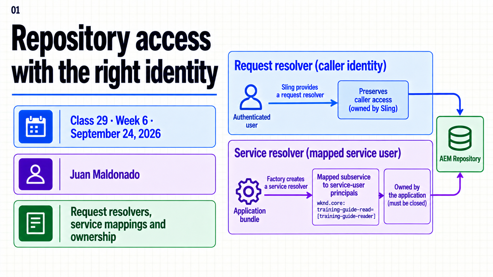
Topic summary
A ResourceResolver carries an access context. Request processing should preserve the caller’s permissions with the resolver supplied by Sling. A technical task without a request can use a mapped service identity with only the repository privileges that task needs.
This session connects the service user and ACL from Class 28 to a small Java service. The mapping names the calling bundle, a task-specific subservice and the service-user principal. The service creates one resolver, reads a fixed folder, copies a String and closes the resolver. Diagnosis keeps mapping, repository access and HTTP protection as separate layers.
- Preserve caller access for user-driven reads.
- Use service identities for bounded technical tasks.
- Match bundle, subservice and principal names exactly.
- Treat mapping and repository permissions as separate controls.
- Close factory-created resolvers and leave borrowed resolvers open.
- Identify the rejecting layer before changing permissions.
30-minute agenda
| Time | Slides | Focus |
|---|---|---|
| 0–6 | 1–3 | Identity choice and a borrowed resolver. |
| 6–13 | 4–6 | Mapping, permissions and lifecycle. |
| 13–23 | 7–9 | Local example, configuration and failures. |
| 23–27 | 10 | CSRF and repository authorization. |
| 27–30 | 11–12 | Key takeaways and questions. |
For a 60-minute session, add 20 minutes of guided installation and log reading, then 10 minutes of questions. The instructor supplies the full fixture.
Complete slide deck
Copy each complete numbered image to PowerPoint or download its PNG.
{kind=link}
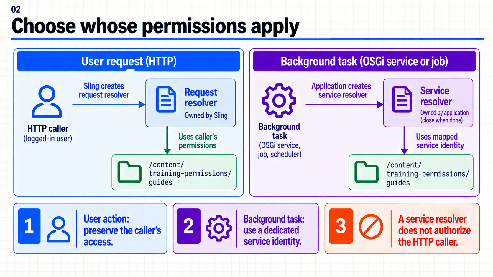
{kind=link}
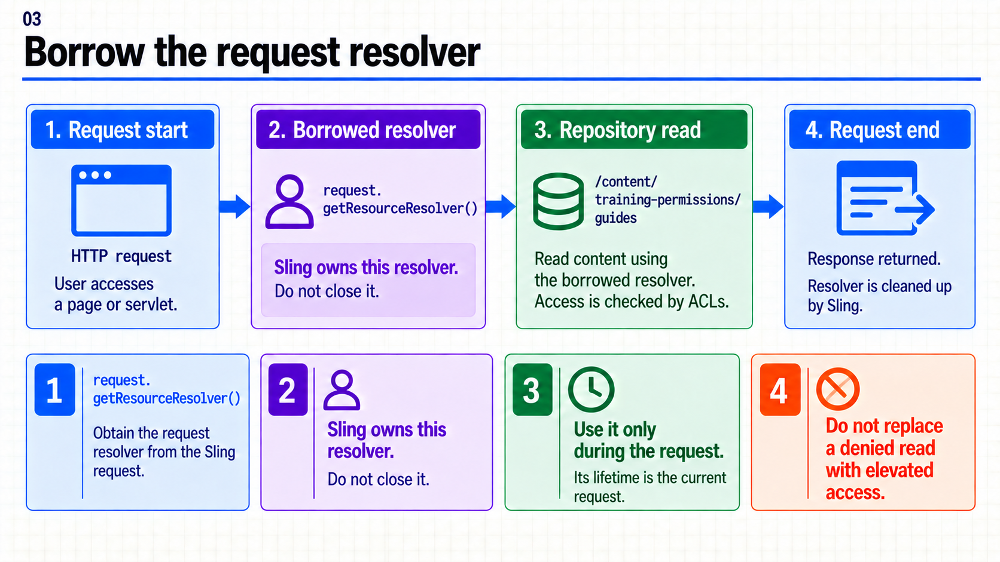
{kind=link}
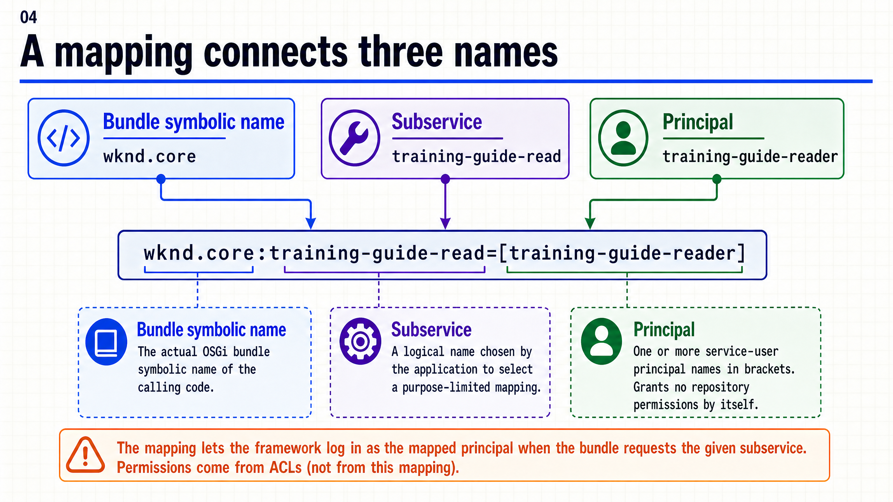
{kind=link}
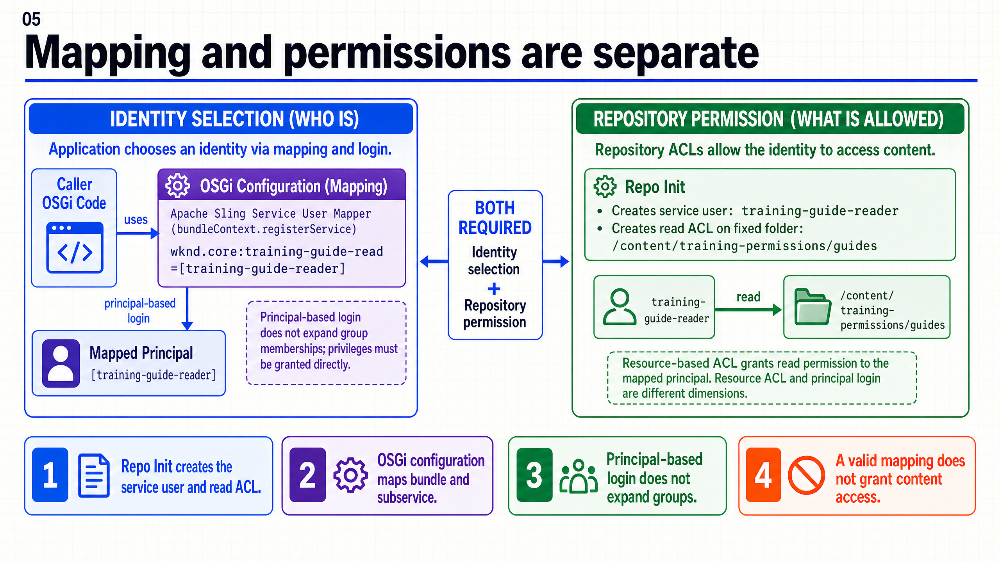
{kind=link}
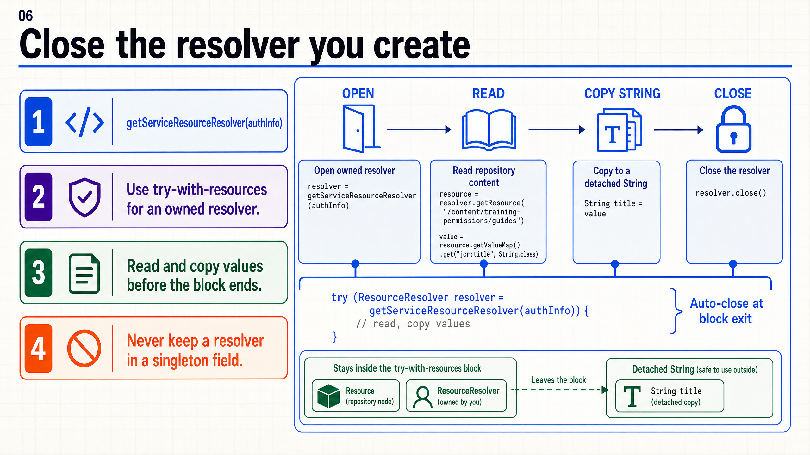
{kind=link}
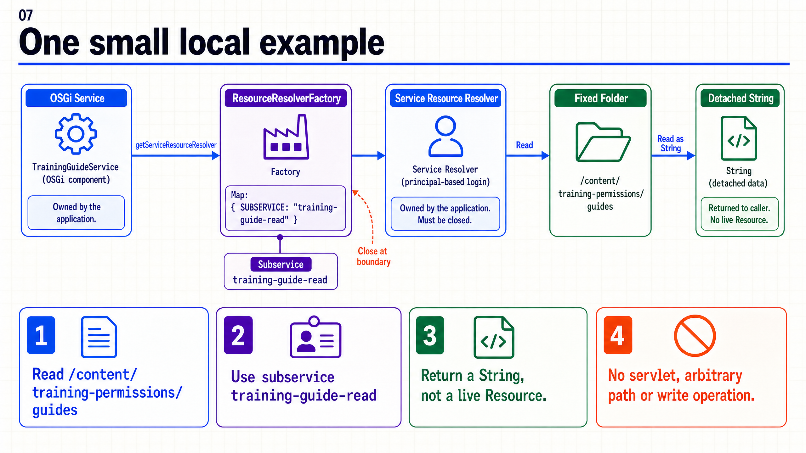
{kind=link}
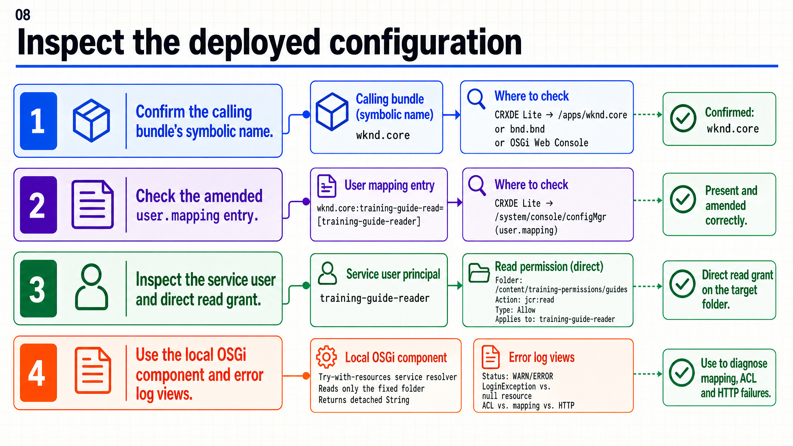
{kind=link}
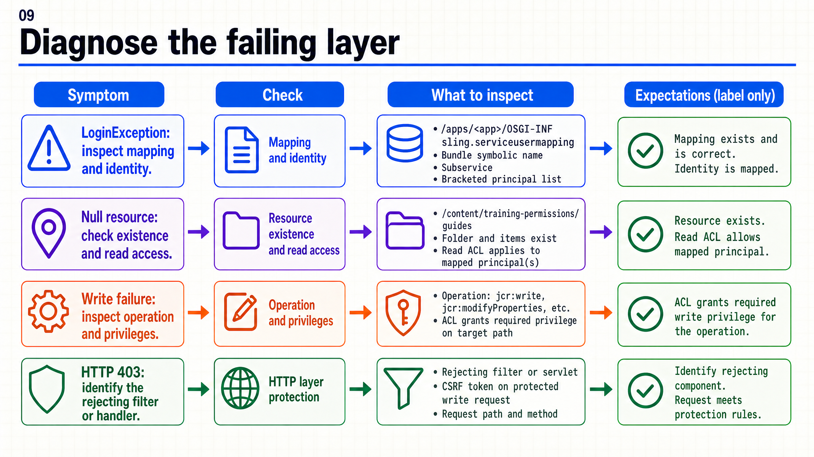
{kind=link}
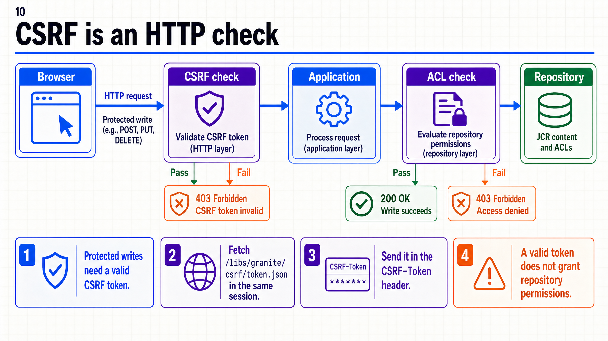
{kind=link}
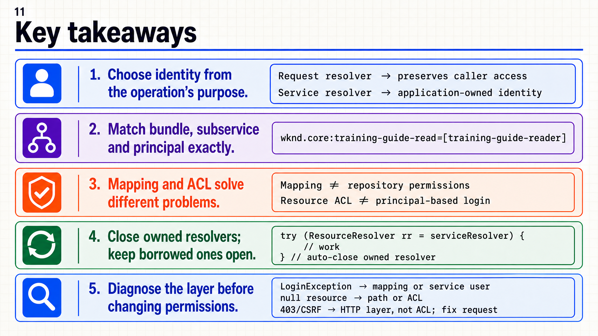
{kind=link}
{kind=link}
Mapping, Java y comprobación local
3. Ejemplo completo en Author local
A. Preparar un punto de partida independiente
- Usa un SDK Author local en
http://localhost:4502y un proyecto WKND o Archetype que ya compile. Los archivos siguientes van en ese proyecto AEM, no se compilan como un reactor desde el repositorio del curso. - Comprueba que las rutas e identidades
training-permissionsytraining-guide-readerno pertenezcan a otro trabajo. Si hay colisión, cambia el prefijo de forma coherente en Java, Repo Init y mapping. - Instala la configuración Repo Init suministrada en la sesión 28. No exige una entrega previa: el archivo crea el árbol y la identidad. Script legible y pasos de instalación.
- Como administrador, comprueba en CRXDE local que existe
/content/training-permissions/guides, de tiposling:Folder, y quetraining-guide-readeres unrep:SystemUserconjcr:readasignado directamente en esa ruta. No es una página de Sites. - Para el resultado inicial no necesitas añadir propiedades: el lector devolverá
guidessi no existejcr:title. Opcionalmente, como administrador local, añadejcr:titlede tipo String con valorTraining guidesy guarda para ver el otro caso.
No crees contraseñas para el service user ni uses un resolver administrativo. La cuenta administradora prepara el fixture; la lectura de la clase usa el mapping.
B. Añadir el mapping y habilitar la demo sólo en Author
Copia los dos JSON en ui.config/src/main/content/jcr_root/apps/wknd/osgiconfig/config.author/.
Mapping: org.apache.sling.serviceusermapping.impl.ServiceUserMapperImpl.amended~training-guide-reader.cfg.json
{
"user.mapping": [
"wknd.core:training-guide-read=[training-guide-reader]"
]
}
Activación de la demo: com.adobe.aem.guides.wknd.core.training.TrainingGuideReader.cfg.json
Descargar com.adobe.aem.guides.wknd.core.training.TrainingGuideReader.cfg.json
{}
El segundo archivo es intencionalmente vacío: su presencia satisface ConfigurationPolicy.REQUIRE. Sin esa configuración el componente de demostración no se activa. config.author limita ambas configuraciones a Author. Para Archetype cambia la raíz /apps/wknd, el package Java y el nombre del PID de la clase; cambia también wknd.core por el nombre simbólico real. Conserva el subservice idéntico en Java, la referencia DS y el mapping.
C. Clase Java completa
Copia el archivo en core/src/main/java/com/adobe/aem/guides/wknd/core/training/TrainingGuideReader.java.
Descargar TrainingGuideReader.java
package com.adobe.aem.guides.wknd.core.training;
import java.util.Collections;
import org.apache.sling.api.resource.LoginException;
import org.apache.sling.api.resource.Resource;
import org.apache.sling.api.resource.ResourceResolver;
import org.apache.sling.api.resource.ResourceResolverFactory;
import org.apache.sling.serviceusermapping.ServiceUserMapped;
import org.osgi.service.component.annotations.Activate;
import org.osgi.service.component.annotations.Component;
import org.osgi.service.component.annotations.ConfigurationPolicy;
import org.osgi.service.component.annotations.Reference;
import org.slf4j.Logger;
import org.slf4j.LoggerFactory;
@Component(service = TrainingGuideReader.class, immediate = true,
configurationPolicy = ConfigurationPolicy.REQUIRE,
reference = @Reference(name = "serviceMapping", service = ServiceUserMapped.class,
target = "(subServiceName=training-guide-read)"))
public class TrainingGuideReader {
private static final Logger LOG = LoggerFactory.getLogger(TrainingGuideReader.class);
private static final String PATH = "/content/training-permissions/guides";
@Reference
ResourceResolverFactory resolverFactory;
public String readWithService() throws LoginException {
try (ResourceResolver resolver = resolverFactory.getServiceResourceResolver(
Collections.singletonMap(ResourceResolverFactory.SUBSERVICE, "training-guide-read"))) {
return readWith(resolver);
}
}
// Borrowed resolver: its caller owns the lifecycle.
public String readWith(ResourceResolver resolver) {
Resource resource = resolver.getResource(PATH);
if (resource == null) {
throw new IllegalStateException("Folder missing or unreadable: " + PATH);
}
return resource.getValueMap().get("jcr:title", resource.getName());
}
@Activate
protected void activate() {
try {
LOG.info("Training guide title: {}", readWithService());
} catch (LoginException e) {
LOG.error("Training service login failed; inspect mapping and principal", e);
} catch (IllegalStateException e) {
LOG.error("Training read failed; inspect fixture and read permissions", e);
}
}
}
readWithService() crea y cierra su resolver. readWith() recibe uno prestado y no lo cierra: se puede invocar con el resolver de una petición cuando la operación debe respetar al solicitante. Ambos leen únicamente la carpeta fija; no reciben rutas arbitrarias de HTTP. Devuelven un String ya obtenido dentro del alcance válido.
La referencia obligatoria ServiceUserMapped retrasa la activación hasta que el mapping esté disponible. Si está ausente o inválido, el componente puede permanecer unsatisfied sin entrar en activate(): no esperes necesariamente una LoginException en el log. Si el login falla al ejecutar una llamada, el método público propaga la excepción; el disparador de demo la registra. Una carpeta inexistente o invisible causa otro mensaje y no se transforma en una lectura elevada. Ejemplo de ServiceUserMapped — Adobe.
D. Construir, instalar y observar
- Ejecuta la construcción local de tu baseline desde la raíz del proyecto AEM. En WKND estándar suele ser
mvn clean install -PautoInstallSinglePackage; conserva las versiones Java/SDK, perfiles y autenticación propios del proyecto. - En Bundles local, abre el bundle core y confirma su estado Active y
Bundle-SymbolicName. Compáralo conwknd.coreen el JSON. - En Configuration Manager local, comprueba la instancia del mapping y la configuración de
TrainingGuideReader. Inspecciona sin introducir cambios manuales que diverjan de los archivos. - En Components local, busca
com.adobe.aem.guides.wknd.core.training.TrainingGuideReader. Si falta, revisa instalación y metadatos DS. Si está unsatisfied, revisa configuración requerida,resolverFactoryyserviceMapping. - Busca
TrainingGuideReaderencrx-quickstart/logs/error.log. Si el logger permite INFO, el resultado esperado esTraining guide title: guideso el título preparado. Si INFO está filtrado, usa un logger local para ese package siguiendo la guía 23. - Para repetir la lectura, deshabilita y vuelve a habilitar sólo este componente de demo en Components local. Su activación lee una vez; no es un scheduler ni vuelve a ejecutarse automáticamente al editar la carpeta.
Resultados esperados, no ejecución registrada en tu instancia. Un componente Active no demuestra éxito de lectura: la demo captura y registra sus errores. Revisa el mensaje y el fixture. No hay despliegue Cloud ni edición de configuración en producción en estos pasos.
E. Reconocer los fallos sin ampliar privilegios
| Síntoma | Comprobación concreta | Evita |
|---|---|---|
| Componente unsatisfied | Configuración requerida, mapping, nombre simbólico y principal existente. | Añadir acceso global para que arranque. |
LoginException al obtener resolver |
Mapping efectivo del bundle/subservice, identidad y disponibilidad del proveedor. | Fallback a admin o a otra cuenta. |
Folder missing or unreadable |
Administrador comprueba existencia; revisa ACL del principal técnico sobre la ruta exacta. | Interpretar null como prueba de inexistencia. |
| Error de persistencia en otra funcionalidad | Identidad, operación, privilegios, restricciones y causa de la excepción. | Conceder jcr:all sin identificar la operación. |
| HTTP 403 | Método, URL, identidad de la petición, log del filtro/handler y capa de respuesta. | Dar por hecho que siempre es ACL o siempre CSRF. |
Para una demostración negativa en un SDK desechable, cambia temporalmente en el mapping el principal a training-guide-reader-missing, instala y observa serviceMapping insatisfecha; después restaura el JSON original. Comprueba antes que ese principal no existe y que no hay mappings duplicados para la misma clave. No cambies permisos ni elimines identidades para provocar el fallo.
La prueba de cierre incluida usa dobles de las APIs; comprueba que el resolver creado se cierre y que el prestado permanezca abierto, pero no valida ACL reales:
package com.adobe.aem.guides.wknd.core.training;
import org.apache.sling.api.resource.Resource;
import org.apache.sling.api.resource.ResourceResolver;
import org.apache.sling.api.resource.ResourceResolverFactory;
import org.apache.sling.api.resource.ValueMap;
import org.junit.jupiter.api.Test;
import java.util.Map;
import static org.junit.jupiter.api.Assertions.assertEquals;
import static org.mockito.ArgumentMatchers.argThat;
import static org.mockito.Mockito.mock;
import static org.mockito.Mockito.never;
import static org.mockito.Mockito.verify;
import static org.mockito.Mockito.when;
class TrainingGuideReaderTest {
@Test
void closesOnlyTheResolverItCreates() throws Exception {
ResourceResolverFactory factory = mock(ResourceResolverFactory.class);
ResourceResolver resolver = mock(ResourceResolver.class);
Resource resource = mock(Resource.class);
ValueMap values = mock(ValueMap.class);
when(factory.getServiceResourceResolver(argThat(this::usesExpectedSubservice))).thenReturn(resolver);
when(resolver.getResource("/content/training-permissions/guides")).thenReturn(resource);
when(resource.getValueMap()).thenReturn(values);
when(values.get("jcr:title", "guides")).thenReturn("Training guides");
when(resource.getName()).thenReturn("guides");
TrainingGuideReader reader = new TrainingGuideReader();
reader.resolverFactory = factory;
assertEquals("Training guides", reader.readWithService());
verify(resolver).close();
}
@Test
void leavesBorrowedResolverOpen() {
ResourceResolver resolver = mock(ResourceResolver.class);
Resource resource = mock(Resource.class);
ValueMap values = mock(ValueMap.class);
when(resolver.getResource("/content/training-permissions/guides")).thenReturn(resource);
when(resource.getValueMap()).thenReturn(values);
when(resource.getName()).thenReturn("guides");
when(values.get("jcr:title", "guides")).thenReturn("guides");
assertEquals("guides", new TrainingGuideReader().readWith(resolver));
verify(resolver, never()).close();
}
private boolean usesExpectedSubservice(Map<String, Object> authInfo) {
return "training-guide-read".equals(authInfo.get(ResourceResolverFactory.SUBSERVICE));
}
}
La ACL efectiva necesita comprobarse en el SDK. El método de lectura no escribe ni llama a commit(). En código que sí escribe, close() libera recursos pero no sustituye a commit().